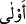
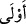

27. Ya melekler, canlarını alırken yüzlerine ve sırtlarına vurarak dövünecekleri
zaman durumları nice olur?
28. Bu böyledir. Çünkü onlar, Allah’ı kızdıran şeylerin ardınca gittiler. O’nu râzı
edecek şeylerden hoşlanmadılar. Allah da onların amellerini boşa çıkardı.
Vahiy özlemleri ve cihad arzularından dolayı -ki cihadda ya şahâdet ve cennet yahut
ganimet ve zafer vardır- “inananlar: «(Savaş hakkında) bir sûre indirilmeli değil
miydi?» derler. Fakat hükmü açık” savaşın vacip oluşu dışında başka bir veche
ihtimali olmayan “bir sûre indirilip de onda” emir yoluyla “savaştan söz edilince
kalblerinde hastalık” dinî zayıflık yahut nifak “bulunanların” ki onların korku endişe
ve heyecandan gözleri kamaşır “sana ölümden bayılıp düşen kimsenin bakışı” ölüm
gelip kişi melekleri gördüğündeki şaşkınlık ve sarhoşluk “gibi” kendisine ölüm
baygınlığı isabet edenin durumu gibi “baktıklarını görürsün. Onlara ölüm gerektir.”
Katâde’den rivâyet edildiğine göre, kendisinde cihad ve savaş zikredilen her sûre
muhkem olup bu sûrede nesh vâki olmamıştır.
Bahsedilen kişilerin kalplerinde olan hastalık, daha belirgin olan görüşe göre, nifak
hastalığıdır. Bu durumda burada sözkonusu edilen îmandan zâhirî ve iddiâî bir îman
murad edilmiş olur. Dolayısıyla âyetin zâhiri “îman edenler ”den bahsederken gizli
planda gerçek mânâda îman etmedikleri halde “îman iddiâsında bulunanlar”
kasdedilmiştir. “Ğaşy”, kalp zayıflığından ve ruhun kalbe toplanmasından dolayı hassas
hareket kuvvetlerinin âtıl kalmasıdır. Bu durum, bunun gerçekleşmesine yol açan dâhilî
bir sebeple olup, kişi bundan bir kurtuluş bulamaz. Kalp ve mide gibi ortak bir organda
bir boğulma yahut rahatsız edici bir soğuk yahut aşırı açlık veya susuzluk yahut başka
bir âfetin bulunması bu sonucun sebeplerindendir. Mağrib kitabında böyledir.
Âyette, Allah’a kavuşma şevkiyle cihad ve ölümü temennî etmenin îman
alâmetlerinden; cihad ve ölümü sevmemek ve nahoş görmenin de küfür ve nifak
alâmetlerinden olduğuna işâret edilmektedir.
“Onlara ölüm gerektir.” Yazıklar olsun, azab olsun onlara. Cehennem onlar içindir.
(evlâ) kelimesi vely kökünden ef‘alü sigasıdır. Vely yakınlık demektir. Mânâsı;
münafıkları belânın kuşatması için onlara bedduâdır. Bu kelimenin (âle) den fa‘lâ
sigası olduğu da söylenmiştir. Mânası; yine işlerinin sevimsiz ve olumsuz olması için
onlara bedduâdır.
Râğıb şöyle demiştir: __WORD__ (evlâ) kelimesi, bir korku ve endişe ifâdesidir. Bu hitap,
helâke yüz tutan kişiye yapılır ve kişinin o belâya düşmemesi için bir teşvik olur. Yahut
bununla helâkten kurtulana hitâb edilir ve o kişi tekrar böyle bir duruma düşmekten
alıkonulur. Çoğu zaman bu ifâde tekraren kullanılır. Sanki kişi, sakındırılan şeye karşı
uyanık olması için işin sonunu düşünmeye teşvik edilmektedir.